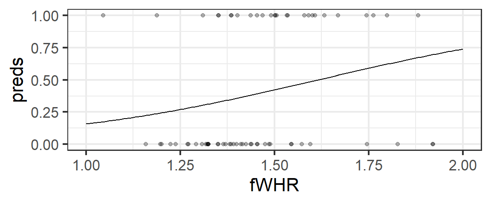
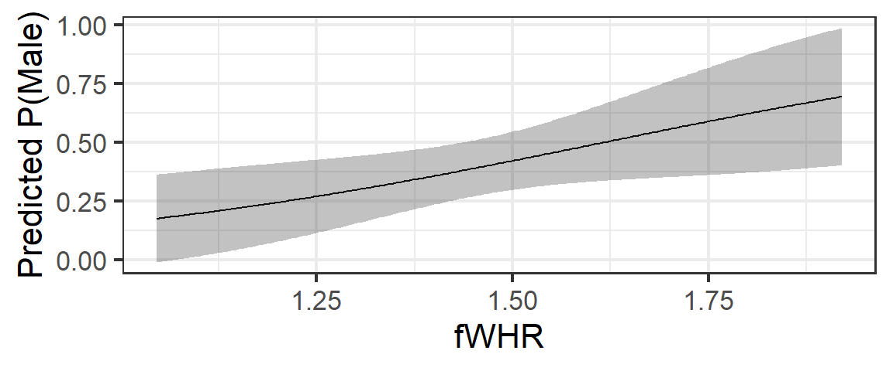

Learning Outcomes
This module introduces logistic regression, which is a generalization of linear regression in which the response variable is a categorical variable with two possible values (often thought of as “successes” and “failures”).
By the end of the module you will:
- Be familiar with the regression equations for logistic regression (and its relatives, probit and complementary log-log regression)
- Derive an expression for the likelihood of a dataset, given a logistic regression model
- Fit a logistic regression model using MLE and
maxLik() - Fit a logistic (or probit or c-log-log) regression model using
glm() - Interpret logistic regression slope values in terms of (log) odds ratios
- Make inferences about the logistic regression slope parameter using Wald and likelihood-based CIs and tests
These materials come from your text book, FAStR2 Chapter 6.8.
Motivation: Bonobos Again
(You can also watch directly on YouTube if you prefer).
Well, there must be a solution to this problem, or we wouldn’t be here. Before you continue, see if you can use the clues you have already to come up with a strategy to modify the linear regression equation to make it work for a categorical predictor.
Probabilities!
If you guessed the probabilities would be a key to our strategy to make regression work for categorical responses, give yourself a pat on the back!
The first, and most key, step to making this work is to focus, not on the values of the categorical variable, but on the process generating them.
Our variable has two possible values; let’s consider one of them to be a “success” (here, in our example, maybe being “Female” is “success”). It makes sense to posit that the data-generating process produces “successes” (observations that are “Female”) with some probability \(p\). Maybe \(p\) is constant, or perhaps it depends on some other variable(s) (like, oh, I don’t know…fWHR?)
Now, all we have to do is work out the details.
Logistic Regression
(You can also watch directly on YouTube if you prefer).
Now that we have our model, we just have to figure out how to fit it to the data…we’ll use maximum likelihood estimation.
Logistic Regression in R: glm()
First, the easy way - letting R do all the work.
We use function glm() (for “generalized linear model”), specifying the model family as "binomial" with a "logit" link function (the transformation that relates the response variable to the linear model).
For example, with our bonobos:
bonobo_logit <- glm(Sex ~ fWHR, data = bonobos,
family = binomial(link = 'logit'))
summary(bonobo_logit)##
## Call:
## glm(formula = Sex ~ fWHR, family = binomial(link = "logit"),
## data = bonobos)
##
## Deviance Residuals:
## Min 1Q Median 3Q Max
## -1.5427 -0.9531 -0.8238 1.2331 1.8658
##
## Coefficients:
## Estimate Std. Error z value Pr(>|z|)
## (Intercept) -4.388 2.138 -2.053 0.0401 *
## fWHR 2.716 1.448 1.876 0.0607 .
## ---
## Signif. codes: 0 '***' 0.001 '**' 0.01 '*' 0.05 '.' 0.1 ' ' 1
##
## (Dispersion parameter for binomial family taken to be 1)
##
## Null deviance: 91.365 on 67 degrees of freedom
## Residual deviance: 87.584 on 66 degrees of freedom
## AIC: 91.584
##
## Number of Fisher Scoring iterations: 4(If we did want a probit or complementary log-log model instead, we would just use family = binomial(link = 'probit') or family = binomial(link = 'cloglog'), and the rest would stay the same.)
Fitted Model Equation
So the equation of our fitted model is:
\[ logit(p_i) = log \bigg{(} \frac{p_i}{(1-p_i)} \bigg{)} = -3.84 + 2.42 x_i\]
\[ y_i \sim Binom(1, p_i) = Binom\bigg{(}1, \frac{e^{-3.84 + 2.42x_i}}{(1 + e^{-3.84 + 2.42x_i})}\bigg{)}\]
Probability of what?
In applications, it is really important to know how a “success” has been defined in order to interpret the fitted model. Here, is \(p\) the probability of being “Male”, or “Female”?
In R (likely because people often code binary variables with values 0 for “failure” and 1 for “success”), the “success” is usually the second possible value of the categorical variable, sorting the values in alphanumeric order.
We can check like so:
levels(factor(bonobos$Sex))## [1] "Female" "Male"The second one is the one R defines as a “success”, so in our model before, \(p\) was the probability of “Male”.
Predictions
Now that we know what \(p\) is the probability of, we can use our model to make predictions.
Let’s say we want to estimate the Sex of a bonobo with a fWHR of 1.5.
According to our model, \(logit(\hat{p}) = \hat{\beta_0} + \hat{\beta_1}x\) so \(logit(\hat{p})\) is
-3.84 + 2.42 * 1.5## [1] -0.21But it would probably make more sense to compute \(\hat{p} = \frac{e^{-3.84 + 2.42x_i}}{(1 + e^{-3.84 + 2.42x_i})}\):
exp(-3.84 + 2.42 * 1.5) / (1 + exp(-3.84 + 2.42 * 1.5))## [1] 0.4476921So according to our model, the probability of a bonobo with fWHR 1.5 being Male is about 0.45. (If we had to guess its sex, I guess we’d guess Female - but reporting the probability actually gives a bit more information.)
We can also automate these calculations in R. The function predict() can return either the log-odds (\(logit(p)\)) or the probability; we get the first by asking for a prediction of type = 'link' and the probability by asking for a prediction of type = 'response'.
new_data <- data.frame(fWHR = 1.5)
predict(bonobo_logit, newdata = new_data, type = 'link')## 1
## -0.3143138predict(bonobo_logit, newdata = new_data, type = 'response')## 1
## 0.4220621Graphically
Finally, we can plot the fitted model. We’ll overlay the observed data-points, too, coding them as 0 for “Female” and 1 for “Male”.
bonobos <- bonobos %>%
mutate(iSex = ifelse(Sex == "Male", 1, 0))
new_data <- data.frame(fWHR = seq(from = 1, by = 0.01, to = 2))
new_data <- new_data %>%
mutate(preds = predict(bonobo_logit, newdata = new_data, type = 'response'))
gf_line(preds ~ fWHR, data = new_data) %>%
gf_point(iSex ~ fWHR, data = bonobos, alpha = 0.3)
From this exploration of the predictions, it’s pretty clear that our model is not great at predicting sex from fWHR. Could we measure how well it’s doing, or test whether fWHR is a “good” predictor? Stay tuned for the last module of class to find out…
How the Magic Happens: MLE
But how did R obtain the model parameter estimates for us?
Maximum likelihood estimation!
We can do it ourselves, too. First, we need to write down an expression for the likelihood of our model.
Let’s begin with the fact that the likelihood of observing a “success” is \(\pi(\mathbf{x})\), while the likelihood of observing a “failure” is \((1-\pi(\mathbf{x}))\) (so \(\pi\) is the probability of success, which depends on the predictor values \(\mathbf{x}\)). We’ll also assume the response variable is recoded as an indicator variable, with value 0 for failures and 1 for successes. Then we have the likelihood
\[\mathcal{L(\mathbf{\beta}; \mathbf{x})} = \prod_{i = 1}^{n} \pi(x_i)^{y_i} (1 - \pi(x_i))^{(1 - y_i)}\]
In other words, the likelihood is a product with one term per observation; \(\pi(x_i)\) for successes, and \((1 - \pi(x_i))\) for failures.
Taking the log-likelihood, we get
\[log(\mathcal{L}(\mathbf{\beta}; \mathbf{x})) = \ell(\mathbf{\beta}; \mathbf{x}) = \sum_{i=1}^{n} y_i log(\pi(x_i)) + (1 - y_i)log(1 - \pi(x_i)) \]
Grouping together the terms with \(y_i\),
\[\ell(\mathbf{\beta}; \mathbf{x}) = \sum_{i=1}^{n} log(1 - \pi(x_i)) + y_i log \bigg{(} \frac{\pi(x_i)}{(1 - \pi(x_i))} \bigg{)}\] Since \(log \bigg{(} \frac{\pi(x_i)}{(1 - \pi(x_i))} \bigg{)} = \beta_0 + \beta_1x_i\), we could make a substitution in the second term of the sum, if we wanted.
We can also make a little more progress analytically, but will eventually find that there is not a closed-form solution for \(\mathbf{\beta}\) in terms of the data.
Numerical MLE
In this case, our only workable solution is to optimize the likelihood numerically.
As a preliminary, we have to create an indicator-variable version of the response variable. Its value will be 0 for “failures” and 1 for “successes” (here, “Male” bonobos).
bonobos <- bonobos %>%
mutate(iSex = ifelse(Sex == "Male", 1, 0))First, we need to write an R function to compute the log-likelihood. We can use our somewhat-simplified expression if we want, but actually all we need is the fact that the likelihood is a product with one term for each observation: \(\pi(x_i)\) for successes and \((1 - \pi(x_i))\) for failures. In addition, we need to know how \(\pi\) (the probability of success) depends on the predictor variable value and the slope and intercept estimates. Remember, \(\pi(\mathbf{x})\) is a length-n vector that depends on \(\mathbf{x}\) and \(\mathbf{\beta}\); \(\mathbf{\pi}\) is not itself a parameter of the model.
logit_ll <- function(beta, bonobos){
# beta[1] = intercept and beta[2] = slope.
pi <- exp(beta[1] + beta[2]*bonobos$fWHR) /
(1 + exp(beta[1] + beta[2]*bonobos$fWHR))
sum(dbinom(bonobos$iSex, 1, pi, log = TRUE))
}
maxLik(logit_ll, start = c(-2, 4), bonobos = bonobos)## Maximum Likelihood estimation
## Newton-Raphson maximisation, 9 iterations
## Return code 1: gradient close to zero
## Log-Likelihood: -43.79198 (2 free parameter(s))
## Estimate(s): -4.388338 2.716016Success! (These values are the same as the ones we got from glm()).
summary(bonobo_logit)##
## Call:
## glm(formula = Sex ~ fWHR, family = binomial(link = "logit"),
## data = bonobos)
##
## Deviance Residuals:
## Min 1Q Median 3Q Max
## -1.5427 -0.9531 -0.8238 1.2331 1.8658
##
## Coefficients:
## Estimate Std. Error z value Pr(>|z|)
## (Intercept) -4.388 2.138 -2.053 0.0401 *
## fWHR 2.716 1.448 1.876 0.0607 .
## ---
## Signif. codes: 0 '***' 0.001 '**' 0.01 '*' 0.05 '.' 0.1 ' ' 1
##
## (Dispersion parameter for binomial family taken to be 1)
##
## Null deviance: 91.365 on 67 degrees of freedom
## Residual deviance: 87.584 on 66 degrees of freedom
## AIC: 91.584
##
## Number of Fisher Scoring iterations: 4Other links?
Think about what would change in the code above, if we wanted to fit a probit or c-log-log model instead. The only thing that changes in those models is the transformation we use on the probability \(\pi(x_i)\) – in other words, with a different link function, the calculation of \(\pi\) would change, but the sum(dbinom(...)) part would not!
Odds, again
Don’t you just love thinking about odds ratios? Aren’t they just the most intuitive thing?
What, no? Really, you don’t think so?
Maybe you should work with them for 10-20 more years, and then maybe you will start to think of them as the best way to communicate information about relative probabilities?
OK, sorry for the sarcasm. The fact is, many people find odds ratios un-intuitive to work with and think about. My honest recommendation is that, if you are going to work with models like these in an applied setting, the best way to communicate the results is to compute and report (and probably summarize graphically) predicted probabilities according to the fitted model.
For example, for our bonobos:
require(s245)## Loading required package: s245pred_plot(bonobo_logit, 'fWHR') %>%
gf_labs(y = 'Predicted P(Male)')
(No need to understand how that was done or replicate it – if you want to know, join us in STAT 245!)
However, there is a (somewhat) useful way to interpret the parameters of a logistic regression model in terms of odds ratios. It’s kind of analogous to interpreting a slope of a linear regression, along the lines of, “if the predictor value increases by 1, then the response increases by [slope].”
Obviously, the way we have used the logit link and the Binomial distribution means that same interpretation won’t hold for logistic regression slopes. But…
We know that
\[ log(\text{odds}) = \beta_0 + \beta_1x\]
So it follows that
\[ \text{odds} = e^{\beta_0 + \beta_1 x} = e^{\beta_0} (e^{\beta_1})^{x}\]
In other words, every time that \(x\) increases by 1 unit, the odds of success are multiplied by a factor of \(e^{\beta_1}\).
(Some) Inference for Logistic Regression
While we do not have an analytical derivation of an estimator for the standard error of the slope (or intercept) estimates in terms of the data, we do know a few things:
- R reports estimated standard errors in its
glm()model summary. These are obtained from the variance-covariance matrix (vcov()) for the parameter estimates (which is estimated during the log-likelihood maximization procedure - we have not dug deep into the details.) Runningsqrt(diag(vcov(fitted_model)))in R extracts these standard error estimates.
summary(bonobo_logit)##
## Call:
## glm(formula = Sex ~ fWHR, family = binomial(link = "logit"),
## data = bonobos)
##
## Deviance Residuals:
## Min 1Q Median 3Q Max
## -1.5427 -0.9531 -0.8238 1.2331 1.8658
##
## Coefficients:
## Estimate Std. Error z value Pr(>|z|)
## (Intercept) -4.388 2.138 -2.053 0.0401 *
## fWHR 2.716 1.448 1.876 0.0607 .
## ---
## Signif. codes: 0 '***' 0.001 '**' 0.01 '*' 0.05 '.' 0.1 ' ' 1
##
## (Dispersion parameter for binomial family taken to be 1)
##
## Null deviance: 91.365 on 67 degrees of freedom
## Residual deviance: 87.584 on 66 degrees of freedom
## AIC: 91.584
##
## Number of Fisher Scoring iterations: 4sqrt(diag(vcov(bonobo_logit)))## (Intercept) fWHR
## 2.137884 1.447898- Since the binomial distribution has only one parameter, and no second “dispersion” parameter needs to be estimated in order to estimate the variance, we can use a standard normal distribution to get the \(z^*\) multipliers and p-values we need to compute CIs and carry out tests for the model parameters (i.e., we can do Wald tests using the SEs from the model output). For the slope in our bonobo model:
slope_Wald_CI <- coef(bonobo_logit)[2] +
c(-1,1) * qnorm(0.975) * sqrt(diag(vcov(bonobo_logit)))[2]
slope_Wald_CI## [1] -0.1218125 5.5538452As for
lm(), the summary already contains p-values for tests of the null hypotheses that the slope or intercept are zero.To get a CI for odds-ratio multiplier \(e^{\beta_1}\), we just exponetiate the upper and lower bounds of the CI for \(\beta_1\). Notice that on this scale the CI won’t be symmetric about the estimate \(e^\beta_1\).
slope_Wald_OR_CI <- exp(slope_Wald_CI)
slope_Wald_OR_CI## [1] 0.8853144 258.2285859- We can also ask R to compute the confidence intervals for us. In this case, it will use likelihood profiling (like the likelihood-ratio-test-based CIs we used in Chapter 5), yielding similar but slightly different results to the Wald CIs above.
confint(bonobo_logit)## Waiting for profiling to be done...## 2.5 % 97.5 %
## (Intercept) -8.8535762 -0.3569309
## fWHR -0.0211761 5.7418731exp(confint(bonobo_logit))## Waiting for profiling to be done...## 2.5 % 97.5 %
## (Intercept) 0.0001428699 0.6998208
## fWHR 0.9790465376 311.6476164All right, so we see that the slope of our model is not 0, but our CI is quite wide, indicating quite a lot of uncertainty in our estimate.
We probably want to ask a lot more questions about “goodness” of predictors and goodness of fit! (And perhaps consider multiple predictors, too.) We’ll return to this idea in the last week of class.
More
If you would like an alternative intro to logistic regression that takes a different approach than FAStR, check out:
(this is optional extra reference material).